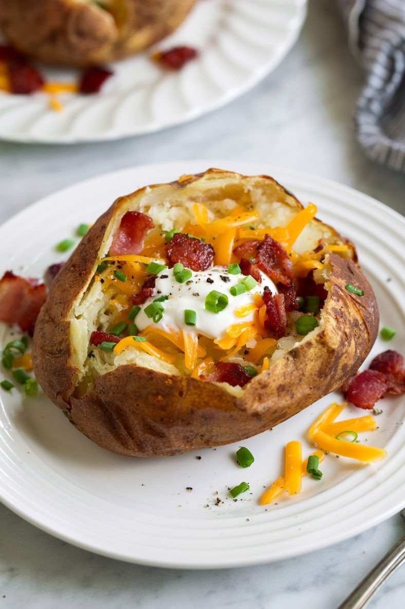

To make baked potatoes, preheat the oven to 400 degrees and wash and dry 4-6 medium-sized russet potatoes. Use a fork to poke holes in the skin, then place the potatoes on a baking sheet and bake for 45-60 minutes or until tender when pierced with a fork. Let the potatoes cool, then cut off the top and carefully scoop out the insides, leaving a thin layer of potato flesh. Mash the scooped-out potato with butter, milk, salt, and pepper, then spoon the mixture back into the potato skins. Bake for an additional 10-15 minutes or until heated through and lightly browned. Serve with your choice of toppings such as sour cream, cheese, bacon bits, or chives.
Ingredients
4-6 medium-sized russet potatoes
Butter
Milk
Salt
Pepper
Steps
Preheat your oven to 400 degrees Fahrenheit.
Wash and dry 4-6 medium-sized russet potatoes.
Use a fork to poke several holes in the skin of each potato.
Place the potatoes on a baking sheet and bake for 45-60 minutes, or until they are tender when pierced with a fork.
Remove the potatoes from the oven and let them cool for a few minutes.
Once they are cool enough to handle, cut a small slice off the top of each potato and carefully scoop out the insides, leaving a thin layer of potato flesh inside the skin.
Mash the scooped-out potato with butter, milk, salt, and pepper to taste.
Spoon the mashed potato mixture back into the potato skins.
Return the stuffed potatoes to the oven and bake for an additional 10-15 minutes, or until they are heated through and the tops are lightly browned.
Enjoy your baked potatoes hot, with your choice of toppings such as sour cream, cheese, bacon bits, or chives.